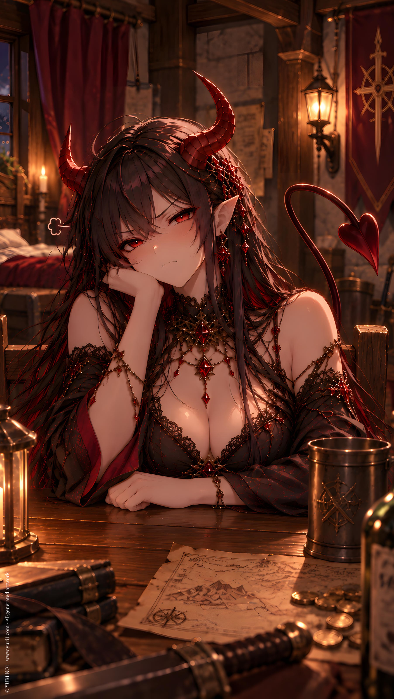

NOVEL／ YURI NO1
Yuri Succubus
CATEGORYNovel
SERIESIP : Loading Night
PUBLISHED
Full Text · YURI NO1
user
！LN Y1 re 002
！首批角色名稱：
紫（L.Night）
紅（E.Red）
！文字區
參考世界觀進行小說文風、語境的匹配調整，使其更吻合背景設定。
將中文腳本的語感笑點、角色互動與劇情資訊，重新解壓縮並本地化成外國讀者自然會閱讀的英文小說。
不要逐字直譯。保留原本的劇情、角色個性、情節順序與情境意圖，但可依英文小說的語感、節奏與文化習慣重新組織表達。
將腳本中壓縮的動作、表情、反應、心理與場景銜接自然展開，使英文讀者能直接理解角色關係與笑點、爆點。
不為增加篇幅而灌水，不自行新增劇情、人物、設定或重要事件。若原文的特色排版在英文中需要改變表達方式，優先保留「特色排版」與角色關係，而非僅中文原句的字面形式。（例如對稱、刻意簡略、重複字母...等特殊表達。）
不是單純的自然語言，而是要有小說作品的語感，不是論文、新聞、一般知識型文章的寫法。
妳使用文字區撰寫時，不要同時又在前或後對我說話。
而是要保持小說流水段落完整。
！請使用文字區撰寫而非一般對話回應。
！世界觀：架空世界、歌德奇幻、魔法、冒險 言情、幽默
/
紫。一名沒有固定住所的召喚師，日常的工作就是接一些冒險公會的任務，透過召喚異界存在來打倒指定的魔物。
ChatGPT
L.Night is a summoner with no permanent home. Most days, she takes on odd jobs from the Adventurers’ Guild, calling beings from other realms to hunt down whatever monsters she has been assigned.
user
/
這天，她來到一個新到訪的城鎮，白玉森林。
這裡的冒險者公會不大，但是附近的自然風貌倒是蠻令人心曠神怡。
/
她看著任務清單，直接看向最高難度的欄位。
「趕走獅鷲獸？」她嘴角微揚，獎賞還不少。
！（安排她輕輕鬆鬆就達成任務）
ChatGPT
This time, she had arrived in a new town: White Jade Forest.
The Adventurers’ Guild here was nothing impressive, but the surrounding scenery was surprisingly pleasant. Lush woods, clean air, and the quiet beauty of nature made the place a rather nice change of pace.
L.Night scanned the quest board, then went straight for the highest-difficulty tier.
"Drive off a griffin?"
The corner of her mouth lifted. The reward wasn't half bad.
Well, that would do.
She accepted the quest without a second thought.
Not long after, L.Night stood before the griffin's nest.
The beast barely had time to spread its wings before violet magic flickered across the air.
A moment later, the griffin was gone.
L.Night dusted off her hands.
"Done."
She turned and headed back toward town.
user
/
「一切都太簡單了。
沒有更困難的任務嗎？」
/
然而，真正的困難任務，竟然不期而遇。
/
冒險者公會上，有一個鄰近古堡主人發出的委託，他在聽聞當地有召喚師能召喚惡魔後，就發出這則高價委託。
「希望可以看看女魅魔。....？」報酬高得嚇人。紫衡量了一下，老實說，輕而易舉。..
ChatGPT
"Everything is far too easy. Is there nothing more difficult?"
As it turned out, a truly difficult request was about to find her all on its own.
Posted at the Adventurers’ Guild was a commission from the lord of a nearby castle. After hearing that a summoner in the area was capable of calling forth demons, he had put out an absurdly high-paying request.
"I'd like to see a female succubus...?"
L.Night stared at the request.
The reward was frankly ridiculous.
She weighed it for a moment.
Honestly, this would be easy too...
user
/
她來到古堡。
一名金色卷短髮的貴族公子立刻起身迎接。
/
紫雖然不喜歡這裡的氣氛，但，算了，就只是讓這委託人看一眼。
/
紫念起異界語言，很快的..
一名女魅魔現身，眼神垂落而嬌魅，長髮黑中帶紅，頭上的一對惡魔角閃著漂亮的紅色反光，性感的惡魔歌德裝扮，暗示又挑逗的細長惡魔尾尖端還有個尖銳愛心造型。
/
貴族公子看過癮之餘，還問紫能不能留下女魅魔。
！安排對話。
/
「當然不行。這是危險生物。你會被吸成人乾。」紫說。
ChatGPT
L.Night arrived at the castle.
A young nobleman with short, curly blond hair immediately rose to greet her.
L.Night didn't particularly care for the atmosphere of the place, but whatever. All she had to do was let the client have a look.
She murmured a phrase in an ancient tongue from another realm.
The air shimmered.
A female succubus appeared.
Her gaze lowered with an alluring softness. Long black hair streaked with crimson framed her face, while a pair of demonic horns caught the light with a beautiful red sheen. She wore an elegant, sensual Gothic outfit befitting a demon, and the slender tip of her teasing tail curled into a sharp little heart.
The nobleman stared for a moment, thoroughly captivated.
"Remarkable..." he murmured.
His eyes lingered on the succubus before he turned back to L.Night.
"Could you leave her here?"
L.Night gave him a flat look.
"Of course not."
"Why not? I'll pay you more."
"That's not the problem."
She glanced at the succubus.
"She's a dangerous creature. She'll drain you dry."
user
/
然而，解除召喚時，她隱隱感到有一絲不對勁，又說不上來。
/
算了。
/
接過委託人在任務單上的簽名，她只想著趕快去領賞。
/
領賞，回到旅館。
她耳邊傳來奇怪的聲音。
是空間縫隙切裂聲。..
/
「...」紫不發一語。
ChatGPT
As she dismissed the summoning, something felt faintly wrong.
She couldn't say what.
Whatever.
With the client's signature secured, she collected her reward and returned to the inn.
Then she heard it.
The sound of a spatial rift tearing open beside her.
"..."
user
/
紫才剛回到旅館房間，一個聲音傳來。
「欸。靠我賺錢？那麼錢也該分給我花用吧？」嬌嫩又任性的女聲。
紫微微挑眉。
真不走運，遇到了跨界個體。
/
跨界個體，通常是異界存在本身就具備穿越位面的能力，能自由進出。
召喚師都會避免召喚到這樣難管理的異界存在。
這一次怎麼失靈的？
紫想了想。嗯。很可能是她對魅魔族真的不熟悉。
以前戰鬥所需，根本就不需要這種嬌滴滴、靠曖昧『戰鬥』的存在，她甚至記不得上一次召喚是多久以前的事情。
真是失策，惹到一個會跨界的。
ChatGPT
L.Night had barely made it back to her room at the inn when a voice came from behind her.
"Hey. You made money off me, didn't you? Then I think you owe me a share."
A soft, spoiled-sounding female voice.
L.Night raised an eyebrow.
Just her luck.
She'd run into a cross-dimensional entity.
Cross-dimensional entities were beings from other realms that possessed the innate ability to cross between planes, allowing them to come and go freely.
Summoners generally avoided calling creatures like that. They were far too difficult to control.
So how had this gone wrong?
L.Night thought about it for a moment.
Hmm.
It was probably because she really didn't know much about succubi.
She'd never needed creatures like this for combat. Something so delicate and coy, relying on flirtation as a form of "fighting"...
Honestly, she couldn't even remember how long it had been since the last time she'd summoned one.
What a mistake.
She'd managed to get herself stuck with a demon that could cross dimensions.
user
/
正如她猜測，剛剛在古堡召喚過的那隻女魅魔再次緩緩從空氣中現身，根本就不需要靠紫的契約術式。
/
女魅魔看起來一臉氣噗噗的樣子，目光卻都是在錢袋上。
ChatGPT
Just as L.Night had suspected, the same female succubus she had summoned at the castle slowly emerged from the air again, without needing L.Night's summoning circle or contract magic at all.
The succubus looked thoroughly huffy, but her eyes kept drifting toward the money pouch.
user
/
「給我～」女魅魔伸出手。
「要多少？」紫扶額。趕快把這個麻煩的生物送走就好。
「九成。」
「......」怎麼感覺趕路費都沒回本。
ChatGPT
"Give me~" The succubus held out her hand.
"How much?" L.Night sighed, rubbing her forehead. At this point, she just wanted to pay off this troublesome creature and get rid of her.
"Ninety percent."
"..."
L.Night stared at her.
At this rate, she wasn't even making back the travel expenses.
user
/
「聽著，我--」
「我不要聽，那個男人？又很醜～我還沒收心理創傷費用耶？」
「更何況，人家是百合魅魔。看妳是女孩子才回應召喚的，結果？竟然是把我找出來給男人觀賞？簡直是褻瀆。」女魅魔雙手叉腰。
「但妳回應了召喚啊..」不能怪我吧。
紫心想。
/
「不管。這樣子，加上心理受創，我要九成五了。」女魅魔說得正正當當。
ChatGPT
"Listen, I—"
"I don't wanna hear it. That man? He was so ugly~ I haven't even charged you for emotional damages yet."
The succubus planted both hands on her hips.
"And besides, I'm a yuri succubus. I answered the summoning because you were female. And what did you do? You summoned me just so some man could stare at me? That's practically sacrilege."
"But you answered the summoning..." L.Night thought. 'How is that my fault?'
"Whatever. With the emotional trauma added in, I'm raising my cut to ninety-five percent."
She said it with the absolute confidence of someone presenting a perfectly reasonable business proposal.
user
/
「好..給妳。算我的錯。」紫起身，只從裡面拿走一枚銀幣，其他整袋遞給女魅魔。
/
女魅魔往裡面探頭看了看，嘴角浮起一抹微笑，「啾」的一聲，隨著一個愛心符號，錢袋整個消失。顯然是被送進異界了。
/
紫看著她。
她看著紫。
/
「....」紫開始念起解除召喚的異界語言。
/
........
果然沒用，因為她這次是自己來的，不是回應紫的召喚。
「妳怎麼還在這裡？」紫乾脆問她本人。
ChatGPT
"Fine... I'll give it to you. My mistake."
L.Night stood up, took a single silver coin from the pouch, and handed the rest to the succubus.
The succubus leaned over to peek inside.
A little smile curled across her lips.
"Chu~"
With a tiny heart appearing beside her, the entire money pouch vanished.
Apparently, she'd sent it straight back to her own realm.
L.Night looked at her.
The succubus looked back at L.Night.
"..."
L.Night began reciting the words of dismissal in the language of the other realm.
........
As expected, it didn't work.
This time, the succubus had come here on her own. She hadn't been summoned by L.Night.
"Why are you still here?" L.Night finally asked her directly.
user
/
「我又沒說我要走？」
紫一愣。
被耍了？
ChatGPT
"I never said I was leaving."
L.Night froze.
...Had she just been played?
user
/
「這位魅魔小姐...」
/
「我叫紅。」她還乾脆的自我介紹起來。
紫再次扶額「我要休息了，妳請回吧，紅小姐。」
/
「人家要睡這裡。」
「...」
「哼。召喚魅魔想輕輕鬆鬆跑掉嗎？」她本來看起來像坐在空中，突然也像從透明的椅子上跳下來。緩緩靠近紫，在她身邊繞圈圈看了好幾圈，甚至還把尾巴勾在她腰間。
/
「我看妳蠻好吃的。」紅。
「不好吃。」紫沒有想過跟魅魔進一步接觸，弄不好就會變成人乾。
「我會小心一點，慢慢吸的～」紅。
「不要吸。」
ChatGPT
"Miss Succubus..."
"My name's E.Red." She introduced herself without the slightest hesitation.
L.Night rubbed her forehead again. "I'm going to rest now. Please go home, Miss E.Red."
"I wanna sleep here."
"..."
"Hmph. You think you can summon a succubus and just walk away?"
Until then, E.Red had looked as though she were simply sitting in midair. Now she hopped down as if stepping off an invisible chair, then slowly circled L.Night, looking her over from every angle.
Her tail even curled around L.Night's waist.
"I think you're pretty tasty," E.Red said.
"I'm not."
L.Night had never intended to get any closer to a succubus. One wrong move and she could end up drained dry.
"I'll be careful. I'll drain you nice and slow~"
"Don't."
user
/
紅索性將豐滿的胸部塞進紫的懷抱，還一邊亂蹭。「嗯～觸感很好耶？」
「哼。..不要本小姐看上了，還在那邊自以為是哦？」
/
「...話都妳在說。」紫腦中還在盤算怎麼把這位跨界存在請走。
ChatGPT
E.Red simply pressed her generous curves against L.Night, rubbing against her with a pleased little hum.
"Mmm~ Nice texture."
"Hmph... Don't get so full of yourself just because this lady happens to have taken a liking to you."
"...You really do all the talking," L.Night thought, already trying to figure out how to get this cross-dimensional nuisance to leave.
user
/
接著，紅又靠近紫..一副要親上去了的動作。
紫伸手按住她的肩膀「紅小姐。...」
紅似乎有點不情願的皺眉。「搞什麼嘛？嫌人家不夠漂亮？不夠秀色可餐？」
「紅小姐，妳很漂亮。」
「謝謝～」
「...不是讓妳說謝謝的時候吧？...算了。那不是重點。重點是，跟姿色無關。」
「那跟什麼有關？尾巴的尺寸？」
「不是。」紫嘆了口氣「我沒有想跟魅魔族扯上關係。」
/
「那還召喚人家.........
差勁透了....
人家 ..抱著配對的心情回應的耶...」紅的尾巴垂下來，臉色看起來沮喪。
「....」怎麼我現在像是個渣女了？紫心想。
ChatGPT
Then E.Red leaned in again, moving as though she were about to kiss her.
L.Night caught her by the shoulder.
"Miss E.Red..."
E.Red frowned, looking mildly reluctant. "What's the matter? Am I not pretty enough? Not tempting enough?"
"Miss E.Red, you are very beautiful."
"Thank you~"
"...That wasn't exactly the part where you were supposed to say thank you. ...Never mind. That's not the point. The point is, it has nothing to do with your looks."
"Then what does it have to do with? The size of my tail?"
"No."
L.Night sighed. "I just don't want to get involved with a succubus."
"Then why did you summon me in the first place......?"
E.Red's tail drooped, her expression turning dejected.
"That's just mean.... I answered because I thought we might be a match..."
"..."
'Why do I suddenly feel like the heartless one here?' L.Night thought.
user
/
「要怎樣，妳才肯回去？」
「不管，人家看上妳了，才回應的呀。」紅邊哼了一聲，邊鬧彆扭似的撇過頭。
/
...
紫告訴自己，千萬，一輩子都不要再召喚魅魔這種生物。
ChatGPT
"What would it take to make you go back?"
"Don't care. I took a liking to you, so that's why I answered in the first place."
E.Red huffed, turning her head away with an exaggerated little pout.
...
L.Night told herself one thing.
Never summon a succubus again.
Ever.
user
/
瞌睡蟲已經爬滿臉，紫嘆了口氣。
先這樣吧，她決定無視魅魔的存在，脫下罩袍，逕自爬上床。
/
看著脫下罩袍，只剩內襯的紫。
紅的眼中微微發亮。「身材..也很合我胃口耶..」還露出得意的笑容。
管它身材還是什麼，睡覺。
紫把棉被拉高，蒙住半個臉。
/
然而，正如她所料。
棉被發出窸窣聲...一個重量壓了過來。
她猜得到是什麼狀況，繼續閉上眼，反正..不要理紅的話，很快就會自討沒趣離開吧。
ChatGPT
Sleep was already written all over L.Night's face. She sighed.
Fine. She would just ignore the succubus.
She took off her cloak, climbed into bed, and pulled the blanket over herself.
E.Red watched as L.Night slipped out of her cloak, leaving only her clothes underneath.
Her eyes lit up slightly.
"That figure... is pretty much to my taste too..."
A smug smile crept across her face.
Whatever.
L.Night was too tired to care about her figure—or anything else.
Sleep.
She pulled the blanket up, covering half her face.
But, just as she'd expected, the blanket soon began to rustle.
Then something settled beside her.
L.Night could already guess what it was.
She kept her eyes closed anyway.
If she ignored E.Red, surely the succubus would get bored and leave on her own.
user
/
一雙手突然勾在紫胸前。
「....唔」紫的內心開始煩躁。
上下其手。
/
「.............唔....」
/
輕輕地，挑弄了一下。
/
啪！ 紫猛地掀開棉被，果然，紅就窩在裡面，像是做了什麼壞事被抓到一樣。
ChatGPT
A pair of hands suddenly slipped around L.Night's chest.
"...Mm."
Her patience was beginning to wear thin.
The hands wandered.
".............Mm..."
Then, just lightly, they gave her a teasing little squeeze.
Smack!
L.Night abruptly threw the blanket open.
As expected, E.Red was curled up underneath it, looking like she'd just been caught doing something she absolutely wasn't supposed to.
user
/
她的尾巴還正在愉悅的輕輕甩動，尖端的小愛心簡直是種挑釁。
「讓我好好睡覺，好嗎？紅小姐。」
「不然妳給人家吸一點精氣，這樣就會很好睡。」
「...怎麼吸？」
「性行為。」
「我拒絕。」紫再次把棉被拉過來蒙住臉，徹底想把紅隔絕在外。
ChatGPT
Her tail was still swishing happily, the little heart at its tip practically taunting her.
"Can you just let me sleep, Miss E.Red?"
"Or you could let me drain a little of your energy. It'll help you sleep."
"...How?"
"Sex."
"I refuse."
L.Night pulled the blanket back over her face, determined to shut E.Red out completely.
user
/
還是找個惡魔來把她趕跑？」「不..那樣好像也太過火了。」紫內心盤算的同時。
那雙不安分的手又開始往她胸前伸過來。
/
「....受夠了..這樣真的睡不著。」她嘆了口氣，坐起身。
「終於下定決心了嗎？」紅流露出期待。
「嗯。」
/
紅的嘴裡只能發出嗚嗚聲『給我記住！！等我鬆綁，我要把妳吸乾！！』 像是在說這個。
紫召喚了鎖鏈系的惡魔，把紅纏在床柱上，然後拿了條手巾塞進她嘴裡。
/
終於可以安靜睡覺了。
ChatGPT
"Should I just summon a demon to chase her off?"
'No... That might be a little excessive.'
As L.Night weighed her options, those restless hands started reaching toward her chest again.
"...I've had enough. There's no way I can sleep like this."
With a sigh, she sat up.
"Finally made up your mind?" E.Red asked, looking hopeful.
"Yeah."
—
A moment later, all that came from E.Red was a muffled, indignant "Mmph!"
'Remember this!! Once I'm free, I'm going to drain you dry!!'
At least, that was probably what she was trying to say.
L.Night summoned a chain demon, which promptly wrapped E.Red up against the bedpost. Then she stuffed a handkerchief into the succubus's mouth.
Finally.
She could sleep in peace.
user
/
一覺到天亮，太爽了。
紫伸了伸懶腰，下意識探頭看了看床柱，很好。女魅魔還在那裡。
由於鎖鏈惡魔的鏈條帶有異界魔力，紅如果沒有辦法解開，那麼也無法透過溜回異界來脫逃。
她搔了搔紊亂的髮絲，從床上下來，走到紅面前。
紫愣住了。
紅的眼角..顯然有淚光，臉頰也有淚痕。
本來活潑愉悅的惡魔愛心尾巴垂頭喪氣。
/
她忍不住有點心虛，還是解除召喚，鎖鏈很快的憑空消失，紅癱軟了下來，紫連忙扶住她。
「...」
她看到紅露出一副『計畫成功』的賊笑。
很好。看來根本不用擔心。
ChatGPT
She slept straight through until morning.
What bliss.
L.Night stretched, then instinctively glanced toward the bedpost.
Good. The succubus was still there.
The chains of the chain demon were imbued with otherworldly magic. Unless E.Red could break them, she couldn't escape by simply slipping back into her own realm, either.
L.Night ran a hand through her disheveled hair, climbed out of bed, and walked over to E.Red.
Then she froze.
E.Red's eyes were brimming with tears.
"Sniff... sniff..."
A tear rolled slowly down her cheek.
Then another.
Her tail drooped.
Her shoulders trembled.
She even gave a tiny, theatrical sniff before squeezing out another tear.
L.Night stared at her.
"..."
Still, she couldn't help feeling a little guilty.
She dismissed the chain demon. The chains vanished into thin air, and E.Red immediately went limp. L.Night quickly caught her.
"..."
A beat of silence.
Then one of E.Red's eyes cracked open.
A sly grin spread across her face.
Right.
Those tears had been fake.
Of course they had.
She'd fallen for it.
user
/
「夫君好狠...竟然這樣就把人家捆綁在柱子上一整晚..」
紅坐到一旁的椅子上，半掩秀容，聽起來毫無誠意的說著。
「怎麼一晚過去我就變成夫君。...」紫無言。
/
「還是要叫，愛人？」
「不要。」
「叫親愛的。」
「我拒絕。」
「叫人家的大蜜糖。」
「....」紫深吸了一口氣。
「紫。」
「紫夫君～」
「就說了夫君是多的！！」
ChatGPT
"My dear ♀husband was so cruel... tying me to a bedpost and leaving me there all night..."
E.Red sat down in a nearby chair, half-hiding her lovely face behind one hand as she spoke with absolutely no sincerity.
"How did I become your husband after just one night...?" L.Night stared at her, speechless.
"Or should I call you my lover?"
"No."
"Darling?"
"I refuse."
"My big, sweet honey?"
"...."
L.Night took a deep breath.
"L.Night."
"L.Night, my husband~"
"I told you, the 'husband' part is extra!!"
user
/
老實說，紅身為魅魔，絕對不難看。
無論外表、五官、肌膚、身材、甚至是犯規的曲線，都是頂流。
加上那甜膩、主動的靠近。..
恐怕多數人都無法自持。
/
但，紫很清楚，魅魔只是在吃東西罷了，最終都會被吸成人乾。
至於是不是死前這麼爽也不錯。
這種問題，問紫不對。
她還沒有打算死。
ChatGPT
Honestly, as a succubus, E.Red was undeniably attractive.
Her appearance, her features, her skin, her figure—even those dangerously voluptuous curves—were all top-tier.
And with the way she sweetly, shamelessly kept closing the distance...
Most people probably wouldn't stand a chance.
But L.Night knew better.
A succubus was only eating.
Eventually, she'd drain her victim dry.
As for whether being that blissful before dying might make it worth it...
That was a question better not asked of L.Night.
She wasn't planning to die yet.
user
/
「夫～君～」
紅又把自己的胸口貼近紫的臉頰。
「不要這麼冷淡～」
「人家好餓哦...」
「.........」紫沉沉的呼出一口氣。
「不要叫夫君了..很怪，況且我又不是男人。」
「對百合魅魔來說，妳就像人家的盤中飧嘛～咦？啊～人家是說，人家的白馬公主啦。」
「.......」到底在講什麼東西。
ChatGPT
"Hus~band~"
E.Red pressed her chest against L.Night's cheek again.
"Don't be so cold~"
"I'm hungry..."
"........."
L.Night let out a long, heavy sigh.
"Stop calling me 'husband.' It's weird. Besides, I'm not even a man."
"To a yuri succubus, you're basically a meal to me~"
She paused.
"Eh? Ah~ I mean, my fairytale princess."
"......."
'What are you even talking about?'
user
/
「嗯～？就一下下就好？人家快餓死了～這裡有人在虐待魅魔啦～」
紅邊說，尾巴邊甩動。
越來越誇張了。
/
「...妳只有...那個...可以吃飽嗎？」紫竟然認真考慮投食，但，也得看飼料是什麼。
「人家需要妳的..」
紅靠近紫。
「（消🍖）♡（音🍖）♡」
紫閉上眼。
夠了。
到此為止。
她受不了了。
/
「？？？？？？@#$！」
紫再次召喚鎖鏈惡魔，再次把方巾塞進紅嘴裏。
ChatGPT
"Mmm~? Just a little? I'm starving~ Someone's abusing a poor succubus here~"
E.Red swished her tail as she complained.
This was getting more and more ridiculous.
"...Can you only... eat... that... to feel full?"
L.Night actually considered feeding her.
But first, she needed to know what kind of "food" she was dealing with.
"I need your..."
E.Red leaned closer.
"(♀)♡ (♀)♡"
L.Night closed her eyes.
Enough.
That was it.
She'd had enough.
"Wha—MMMPH!!"
Once again, L.Night summoned the chain demon and stuffed the handkerchief back into E.Red's mouth.
user
/
紫嘆了口氣，這樣下去不行。
她喃喃了一段異界語言，很快的，面前憑空浮現一半書籍
『女魅魔馴養技術』
她從異界文庫中，借來的。
上頭還飄著一串魔法文字：出借費用$50
！也能用50銀幣代替$符號，以英文通順為主。
/
紫皺了皺眉頭「50枚銀幣？！太貴了吧！」
自從遇到紅，簡直是開始虧本。
她嘆了口氣，還是『用自己儲存在異界銀行的錢幣付了款』
ChatGPT
L.Night sighed.
This wasn't going to work.
She murmured a sequence of words in an otherworldly tongue. Before long, a book materialized in midair before her.
『Succubus Taming Techniques』
She'd borrowed it from an interdimensional library.
Floating above the book was a line of magical text:
**Loan Fee: $50**
L.Night frowned.
"Fifty silver coins?! That's expensive!"
Ever since E.Red had appeared, she was practically running at a loss.
She sighed and paid the fee anyway, using coins from her account at an interdimensional bank.
user
/
女魅魔的品種..她認真看了看，還積極尋找「百合魅魔」。
沒有這種東西。
但是性向這方面還真的有。
「只狩獵女性的女魅魔」她喃喃唸
通常為高階女魅魔。
有種『召喚=求偶』的潛規則。
女召喚師應該知道這份預設知識，避免被盯上。
/
....很好，我不知道。
ChatGPT
L.Night carefully went through the section on succubus varieties, actively searching for anything about "yuri succubi."
There was no such species.
But apparently, sexual orientation was a real thing.
"Female succubi that only hunt women..." she murmured.
They were usually high-ranking succubi.
There was even an unwritten rule among them: summoning a succubus was essentially the same as accepting courtship.
A female summoner was supposed to know this basic piece of common knowledge, if only to avoid attracting their attention.
"...."
Well.
So much for common knowledge.
She hadn't known any of that.
user
/
「驅趕女魅魔的章節...」
沒有？
她皺眉翻來翻去，真的沒有？
不論驅趕、封印、解約。
這類的主題通通看不到。
只看到最接近的「女魅魔失去興趣的補救方法」
.........把內容反過來看的話，可以吧？
ChatGPT
"Chapter on driving away a female succubus..."
Nothing?
L.Night frowned and flipped through the pages again.
Really? Nothing?
No methods for driving them away, sealing them, or breaking a contract.
Not a single section on any of it.
The closest thing she could find was:
"Remedies for When a Female Succubus Loses Interest"
.........
If she looked at it in reverse, though...
Maybe that would work?
user
/
「主動獻上肉體」
...所以紫堅持不互動是對的。
/
「下跪」
...。
/
「稱讚女魅魔的外型」
這個她倒是記起來了，但其實紫也有點於心不忍刻意嫌棄紅。
/
「稱讚女魅魔的性能力」
......記下來。
/
「主動親密的觸碰女魅魔」
...記下來。
/
「避免在她面前和與她相同性別的人類互動」
哦？記下來。
ChatGPT
"Offer yourself to the succubus."
...
So L.Night's insistence on not interacting with her had been the right call.
"Get down on your knees."
...
"Compliment the female succubus on her appearance."
L.Night did remember this one, though she couldn't quite bring herself to deliberately insult E.Red either.
"Compliment the female succubus on her sexual prowess."
......
Noted.
"Initiate affectionate physical contact with the female succubus."
...
Noted.
"Avoid interacting with humans of the same gender in her presence."
Oh?
Noted.
user
/
「試試看...」
她走到紅面前。
紅的眼睛正水汪汪地，淚珠在眼眶打轉。
/
想起上次紅一落地就冒出賊笑。
紫：
「我才不會又上當。...
...
..
..可惡！好啦。」
她還是受不了那種欺負女孩子的心虛感，念起解除召喚。
鎖鏈嗖嗖消失。
/
紅一恢復自由，就撲倒在紫懷裡「哇...好壞，真的好壞哦。虐待魅魔啦～」還伸手捶打她的肩膀。
......接下來的自己要更壞了。
ChatGPT
"Let's try it..."
L.Night walked over to E.Red.
E.Red's eyes were watery, tears glistening at the corners.
L.Night remembered the sly little grin she'd worn the last time she was freed.
'I am not falling for that again...'
...
..
..
'Damn it. Fine.'
She still couldn't shake the guilty feeling of treating a girl that way.
So she recited the words to dismiss the summoning.
The chains vanished with a swift hiss.
The moment E.Red was free, she threw herself into L.Night's arms.
"Aw... you're so mean. So mean~ You're abusing a poor succubus~"
She even pounded lightly on L.Night's shoulder with her fists.
......
Looks like L.Night was going to have to be even meaner next time.
user
/
「紅。」紫開口。
「...」紅還在嘟著嘴，一臉不滿。
但，難得沒被推開？而她眼角餘光也瞄到了桌上的書籍..
紫：「妳。..就是太不知性了，才會魅惑我失敗。」
喀噹
怎麼回事？
「妳以為身材好，就可以得到我嗎？我更在意的是...妳根本不懂浪漫吧？」
（東西裂開聲）
為什麼？
「而且，來這裡，在我面前下跪不是很正常的禮儀嗎？」
咚。
這是...
「更況且。」
「我認真認為妳完全不懂如何取悅我。」
哐啷。
什麼東西的聲音...？
紅從摟著紫的狀態緩緩起身，一臉相當認真的樣子看著她。
『很好...心碎了吧？我就是個壞蛋，快離開我。』紫心想，剛剛這些應該會讓女魅魔討厭的話，看紅的表情似乎生效了。
/
「怎麼會...人家的小心臟...」
受到打擊了對吧？紫心想。
「....好像..好興奮...源源不絕的活力跑出來了...」
？...等等。
「哈..哈...夫君...再多說一些？」紅再次癱軟在紫懷中。
/
不妙。
「人家..好喜歡妳這樣羞辱～..」
....別告訴我...這還是個喜歡罵倒的女魅魔。..
這次換紫的心臟碎裂聲了。
ChatGPT
"E.Red."
L.Night spoke her name.
"..."
E.Red was still pouting, looking thoroughly displeased.
But, for once, she hadn't been pushed away.
Out of the corner of her eye, L.Night also noticed the book lying on the table.
"You... you're just too uncultured. That's why your charm didn't work on me."
Crack.
What was that?
"You think having a good figure is enough to win me over? What I care about is... you clearly don't understand romance at all, do you?"
Crack.
Why?
"And besides, isn't kneeling before me when you come here just basic etiquette?"
Thud.
What was that...?
"Furthermore."
"I genuinely don't think you have any idea how to please me."
Clang.
What was making all those noises...?
E.Red slowly pulled herself upright from L.Night's arms, staring at her with an unusually serious expression.
'Good... That must've broken her heart, right? I'm a horrible person. Just leave me.'
L.Night thought the things she'd said should have been enough to make a female succubus lose interest.
Judging by E.Red's expression, it seemed to be working.
"How could you..."
L.Night waited.
"How could my little heart..."
Yes.
She was hurt.
L.Night was sure of it.
"...feel this good?"
...What?
"Ha... ha... husband... say more."
E.Red melted back into L.Night's arms.
Oh, no.
"I... really like it when you humiliate me~"
....
Don't tell me...
This was a female succubus who actually liked being verbally degraded.
Somewhere inside L.Night, something shattered too.
Crack.
user
/
「這不是反而很不妙了嗎？...」
/
「夫君～好天真哦～我們可是有..適應力。
會隨著愛人的生活風格與個性，而改變喜好呢～」
「.....意思是，我不管怎麼做，妳都會喜歡？」
「嗯..～除了..讓人家餓肚子很不喜歡～」
她的尾巴在身後甩來甩去。
紫嘆了口氣，這生物簡直..比自己能召喚的最強惡魔還要麻煩。
ChatGPT
"Isn't this actually making things worse...?"
"Husband~ you're so naive~ We succubi have... adaptive tastes."
"Our preferences change according to our lover's lifestyle and personality~"
".....So you're saying that no matter what I do, you'll like it?"
"Mmm~... Except when you leave me hungry. I really don't like that~"
Her tail swished back and forth behind her.
L.Night sighed.
This creature was somehow more troublesome than even the strongest demon she could summon.
user
/
「夫君～好好享受人家的寵愛嘛～第一次就好，紅保證妳會喜歡上跟人家『嗯哼』的感覺哦～？」
紫差點噴茶，如果她手上有。
現在茶杯八成已經飛出去。
/
「呼...」她鎮定下來「然後，我的人生就要結束了。」誰會自願成為食物？
「才不會呢～人家是百合魅魔耶～？當然是把夫君榨乾到完全失去生命力再丟掉～
那還有很久很久的哦？」
/
「.....」直接講給我聽的話，真是坦白。
紫心想。
ChatGPT
"Husband~ Why don't you just enjoy my affection~? Just this once. I promise you'll love the feeling of being with me... mm-hm~?"
L.Night nearly choked on her tea.
If she'd actually had any in her hand, the cup probably would've gone flying.
"Ugh..."
She took a moment to regain her composure.
"And then my life is over."
Who would willingly volunteer to become food?
"Not at all~ I'm a yuri succubus, remember~? Of course I'd drain my husband until every last bit of life was gone before tossing you aside~"
"So that means we have a very, very long time together, right?"
"....."
'If you're going to put it that way, you really are honest about it.'
user
/
等等，好像有點合理。
如果是男人被這樣的東西纏上，要不了多久，就被吸乾並完蛋了吧。
女人的話...確實可以..支撐很久..
不對，我想這個幹嘛。
ChatGPT
"......"
L.Night suddenly stopped.
Wait.
That actually made some sense.
If a man were to get caught up with a succubus like E.Red, then going by what she'd just said, he really could end up completely drained before too long.
But a woman...
L.Night frowned and thought about it seriously for a moment.
It did seem like one could last quite a long time.
"......"
Then she suddenly came back to herself.
Wait.
Why was she seriously thinking about this?
"...No."
L.Night rubbed her temple.
"Why am I even thinking about this?"
user
/
「而且夫君為什麼在研究馴服人家？」
「好色哦，一定是想讓人家..好好的『嗯哼～』出來對吧？～」
....沒有。
紫翻了翻白眼。
當初真的不該為了那豐厚報酬惹上女魅魔的。
ChatGPT
"And why are you studying how to tame me, husband?"
"So lewd~ You must want me to... really make you go 'mm-hm~,' don't you?~"
....
No.
L.Night rolled her eyes.
She really shouldn't have gotten herself involved with a succubus just because the reward was so ridiculously high.
user
/
「好吧...妳試試看，但別把我弄死。然後我就要出門了。」紫終於拗不過，鬆口了。
她不可否認，內心竟然也有一點期待..不，好奇。
/
紅像是拿到什麼首肯，猛點頭了幾下，整個人貼近紫身上，開始親暱的蹭蹭她的身子。
/
「！....」紫漲紅了臉。
難為情，太難為情了。
她看著紅離自己如此近，而不斷有種既舒適又異樣的感覺打在意識上。
竟然...還挺...舒服的...
她緩緩閉上眼睛。
ChatGPT
"Fine... Give it a try. Just don't kill me. And then I'm heading out."
L.Night finally relented.
She couldn't deny that, somewhere deep down, she was a little curious.
No—perhaps even a little expectant.
E.Red nodded several times, as though she'd just been granted some great privilege. She immediately moved closer, pressing herself against L.Night and nuzzling affectionately against her.
"!"
L.Night's face flushed red.
This was embarrassing.
Far too embarrassing.
With E.Red so close, wave after wave of strange yet strangely pleasant sensations seemed to wash through her awareness.
It was...
Actually rather nice.
L.Night slowly closed her eyes.
user
/
『BAD END 』
紫沒有再醒來。
....
她驚醒過來，剛剛似乎做了一場怪夢。
低頭一看，紅..竟然也輕輕靠著自己睡著了。
...異常的可愛。
ChatGPT
BAD END.
L.Night never woke up again.
....
She jolted awake.
She'd apparently just had a strange dream.
Looking down, she found E.Red gently sleeping against her too.
...
She was ridiculously cute.
user
/
『尾巴』...也可愛。
看著安靜、闔眼的紅。
紫順著她的身子，緩緩用手撈起那條細長的魔尾，還在尖端的愛心造型上，輕輕用手捏了捏。
「嗚..～」細微的輕吟從紅口中發出。
「...」
尾巴..也輕輕甩了一下，從她的指縫溜走。
她又跟著捉住，又輕輕溜走。
就這麼來回玩了一會。
ChatGPT
'Her tail...'
It was cute too.
L.Night looked down at E.Red, peacefully asleep with her eyes closed.
Following the curve of her body, L.Night slowly reached for the slender demonic tail and lifted it gently. She gave the little heart-shaped tip a soft squeeze between her fingers.
"Mmh~..."
A faint, sleepy moan escaped E.Red.
"..."
The tail gave a tiny flick and slipped free between L.Night's fingers.
She caught it again.
It slipped away again.
For a while, she simply played with it back and forth.
user
/
沒有死。
沒有被吸成人乾。
沒有顯著的健康負擔。
不是BAD END。
而且，那真的很舒服。...
紫感覺，自己才是被馴服了。
她竟然開始覺得，把紅留在身邊...
好像不錯。
ChatGPT
She hadn't died.
She hadn't been drained dry.
There were no obvious health consequences.
It wasn't a BAD END.
And besides...
That really had felt good.
...
L.Night had a strange feeling that she was the one being tamed.
She was actually starting to think that maybe...
Keeping E.Red by her side wouldn't be so bad.
user
/
紫緩緩將掌心撫在紅的背上。
紅依然閉眼睡著，卻稍微調整了一下頭部的位置，舒服的靠在紫的胸口，還露出一股滿足的微笑。
/
...算了。
她的內心有一部分放棄了抗爭。
蠻可愛的不是嗎。...
ChatGPT
L.Night slowly rested her palm against E.Red's back.
E.Red remained asleep, eyes closed. She merely shifted her head a little, settling comfortably against L.Night's chest, a satisfied smile appearing on her face.
...
Fine.
A part of L.Night had given up fighting it.
She was pretty cute, wasn't she...?
user
/
「對妳來說，我根本是超大肉塊對吧？..」
紫喃喃自嘲，她當然知道紅的目的是什麼，剛剛那場沒有再醒來的惡夢，餘悸猶存。
/
「？還不如說是超大卵子呢？」紅含糊的說著，還帶著濛濛的睏意。
原來她也醒了。
/
不過。
........那是什麼啊。
紫的腦海浮現一個畫面，是紅像在吃魚子醬那樣，眼前有一疊黃澄澄的人類女人的卵子料理。正一勺一勺吃的很開心。
「噁....」
自己在想什麼啊。
ChatGPT
"To you, I'm basically one giant chunk of meat, aren't I...?"
L.Night muttered it self-deprecatingly. She knew perfectly well what E.Red wanted from her, and the lingering unease from that nightmare about never waking up was still fresh in her mind.
"Hm? I'd say you're more like one giant ovum, aren't you?"
E.Red's reply came out muffled, still thick with sleep.
So she'd been awake too.
But...
........What was that supposed to mean?
An image suddenly popped into L.Night's mind.
E.Red was sitting in front of a huge platter piled high with bright golden human "eggs", happily eating them one spoonful at a time like caviar.
"Ugh..."
What on earth was she imagining?
user
/
紫索性拿起一旁的『女魅魔馴服技術』起來看，今天...先不去找任務了。..
/
不知道為何，自從先前答應紅，稍微試試看後。..是不是自己其實已經被魅惑了？
好像沒那麼排斥她了。
/
「夫君明明就想好好攻略人家對不對？還特地弄來這種書籍。」
紅的視線也飄到書籍封面上，一邊又把尾巴纏上紫的腰間。
ChatGPT
L.Night simply picked up the 『Succubus Taming Techniques』.
Today...
She wasn't going to take any quests.
For some reason, ever since she'd agreed to give E.Red a chance and actually try this...
Had she already been enchanted?
She didn't seem nearly as resistant to E.Red anymore.
"Husband~ you really do want to properly win me over, don't you? You even went out of your way to get a book like this."
E.Red's gaze drifted toward the book's cover as her tail curled around L.Night's waist again.
user
/
「別叫夫君了，很奇怪..叫紫就好了。」
/
「那麼～紫姐姐～」紅又親暱的把臉頰往紫的臉頰蹭蹭。
「....」紫嘆氣。
書..看不下去了，她伸手扶住紅的肩膀。
「紅...」
「？」
「........」卻欲言又止。算了，她倒回床上。
為什麼，今天感覺特別睏？
好像世界模模糊糊的...但是...
又很放鬆。
ChatGPT
"Stop calling me 'husband.' It's weird... Just call me L.Night."
"Then~ L.Night, big sis~"
E.Red affectionately rubbed her cheek against L.Night's.
"..."
L.Night sighed.
She couldn't read the book anymore.
She reached out and placed a hand on E.Red's shoulder.
"E.Red..."
"Hm?"
"........"
But the words never came.
Whatever.
L.Night simply fell back onto the bed.
Why did she feel especially sleepy today?
The world seemed hazy around the edges...
But...
She felt so relaxed.
user
/
翌日。
紫剛結束一個委託，回到公會領賞。
她身邊跟著一位女孩子，打扮得像是侍從。
公會櫃檯人員看了看她，又看了看一旁的女孩，低下頭沒有多說，將指定的銀幣交給紫。
/
侍從漂亮的過份，而那正是紅。收起了自豪的尖耳朵、犄角、尾巴，看起來像是個普通人類女孩。
/
「我的～」才離開櫃檯，『侍從』紅就伸手去抓錢袋。
/
「？妳根本什麼也沒貢獻。」
「我在旁邊提供情緒價值，很貴耶～」
「...」
ChatGPT
The next day.
L.Night had just finished a quest and returned to the guild to collect her reward.
A young woman dressed like a servant followed at her side.
The guild clerk glanced at L.Night, then at the girl beside her. Without asking any questions, she simply lowered her eyes and handed L.Night the agreed-upon silver coins.
The servant was almost unnaturally beautiful.
And that servant was E.Red.
Her pointed ears, horns, and tail were nowhere to be seen. She had tucked away every trace of her demonic nature and looked like an ordinary human girl.
"My share~"
The moment they stepped away from the counter, E.Red reached for the money pouch.
"Hm? You didn't contribute anything."
"I provided emotional support from the sidelines. That's expensive, you know~"
"..."
user
/
「妳們要錢幣又沒用。」
「才不會沒用。異界也會用人類銀幣交易呢～」
/
等等，也對，她自己也有異界銀行，也會從異界文庫借書。
不過，原來..跨界存在也是嗎。
「人家正想存一棟新的單人宮殿～」
宮殿..單人？還沒有我的份？紫哭笑不得。
ChatGPT
"You don't even have any use for human coins."
"Of course we do. Human silver coins are used for trade in the other realms too~"
Wait.
That was true.
L.Night had an interdimensional bank account herself. She even borrowed books from the interdimensional library.
But... apparently cross-dimensional entities did the same.
"I'm saving up for a brand-new private palace~"
A palace...
Private?
So there wasn't even a room for her?
L.Night could only laugh helplessly.
user
/
「不行，不能再寵妳了。除非妳也有貢獻。」紫將錢袋揣入罩袍裡面。
「哎！唷！」紅又嘟起嘴一臉不滿。
「今天晚上多吃一點回來，哼～」音量很小聲，但不夠小。
ChatGPT
"No. I can't keep spoiling you. Not unless you contribute something too."
L.Night tucked the money pouch inside her cloak.
"Aww! Come on!"
E.Red puffed out her cheeks, looking thoroughly dissatisfied.
"Just eat a little more tonight, hmph~"
She muttered it under her breath.
Unfortunately, not quite quietly enough.
user
/
當晚，即使紫嘴裡嫌棄，她還是再次任憑紅處理自己。
/
隨便她要做什麼吧...
/
紅回到房間，就立刻恢復本來的魅魔外觀。
/
當紫躺在床上。她很快就靠過來。
.....
好睏...腦袋感覺..飄飄然的。
紅觸碰到自己的時候也..
很舒服..
紫眼前一黑，睡著了。
還是該說，昏迷。
ChatGPT
That night, despite all her complaints, L.Night once again let E.Red have her way.
Whatever.
She'd just let her do as she pleased.
The moment E.Red returned to the room, she reverted to her true succubus form.
When L.Night lay down on the bed, E.Red quickly moved closer.
.....
So sleepy...
L.Night's head felt light, almost as though she were floating.
And whenever E.Red touched her...
It felt strangely good.
L.Night's vision suddenly went black, and she fell asleep.
Or perhaps...
It was more accurate to say she passed out.
user
/
每一次，只要紅那樣靠近自己，那種強烈的疲倦與飄飄然就會襲來，。
且還得睡上大半天才能恢復精神。
/
「紅，這樣下去，我會被妳弄死對不對？」
「什麼弄死？人家只是在吃東西呀～」紅的眼睛水汪汪的，彷彿完全沒有做錯事情。
/
「而且，紫也很喜歡被這樣照顧吧～？」
老實說，不討厭。
越來越不討厭了。
甚至，有點期待更多、更長。..
每天..都想要紅那樣對自己。
這就是魅魔嗎？自己..完全淪陷了吧？
ChatGPT
Every time E.Red came that close, that same overwhelming drowsiness would wash over L.Night, leaving her light-headed and floating.
And afterward, she'd need to sleep for most of the day before she felt like herself again.
"E.Red... if this keeps up, you're going to kill me, aren't you?"
"Kill you? What are you talking about? I'm just eating~"
E.Red's eyes were wide and innocent, as though she hadn't done anything wrong at all.
"And besides, L.Night likes being taken care of this way too, doesn't she~?"
Honestly...
She didn't hate it.
She was hating it less and less.
If anything, she was starting to look forward to more.
Longer, too...
Every day, she wanted E.Red to treat her that way.
Was this what being with a succubus was like?
Had she...
completely fallen for it?
user
/
紫伸手抱住紅。
紅則在她懷中露出一股心機的微笑。
這顯然不是什麼戀愛。
就算紅嘴上說什麼「配對」，書裡說什麼「擇偶」。
食物就是食物，這些名詞不過是她們的餘興或是用來哄騙獵物就範的名詞吧？
ChatGPT
L.Night reached out and wrapped her arms around E.Red.
E.Red, nestled in her arms, wore a knowing little smile.
This clearly wasn't love.
No matter what E.Red called it—"being a match"—or what the book called it—"choosing a mate."
Food was food.
Those words were probably nothing more than a little entertainment for succubi...
Or convenient names they used to coax their prey into letting their guard down.
user
/
漸漸地，紫從人們面前消失。
從來未在人群中經營關係的她，消失並沒有引起太大關注。
人們只是隱約覺得，沒有再看過那名強大的召換師回來。
/
—
「夫～君～」
「就說了，不要這樣叫。」
紫站在異界的小徑上，紅雀躍又黏膩的跟著她。
「所以妳說，妳買的單人宮殿在哪？」
「再過去一點點就到了～」
紫跨越了位面，成為跨界的一份子。
然而沒有人類清楚她如何辦到。
只有那本『女魅魔馴養技術』，隱約有一個章節寫著：
『據傳，部分高階女魅魔具有將認定為同性配偶的人類，送回異界定居的習性。』
！用詞要與前面出現過的一致。
ChatGPT
Gradually, L.Night disappeared from the eyes of the people around her.
She had never gone out of her way to build connections among them in the first place, so her disappearance attracted little attention.
People simply began to notice, vaguely, that the powerful summoner who had once taken on quests in the area never seemed to return.
—
"Hus~band~"
"I told you, don't call me that."
L.Night walked along a path in the other realm, while E.Red happily skipped alongside her, clinging to her as usual.
"So, where's this private palace you bought?"
"Just a little farther~"
L.Night crossed the boundary between planes, becoming one of the cross-dimensional beings herself.
No human ever learned how she'd managed it.
Only 『Succubus Taming Techniques』 contained a vague mention of it in one of its chapters:
"It is said that some high-ranking female succubi have a habit of bringing humans they recognize as same-sex mates back to the other realm to settle there."
user
！end